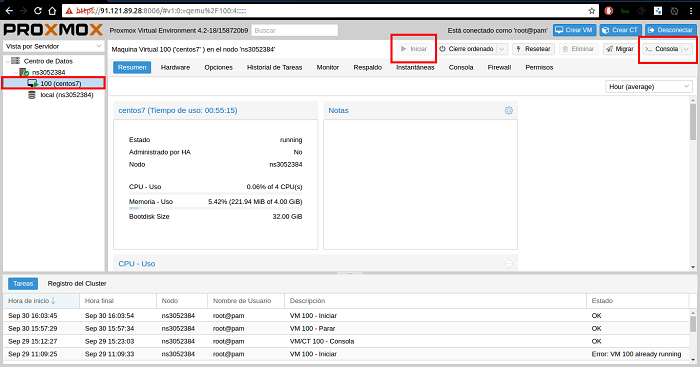
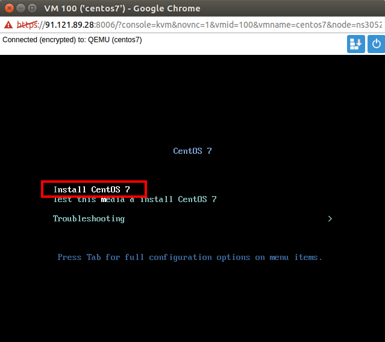
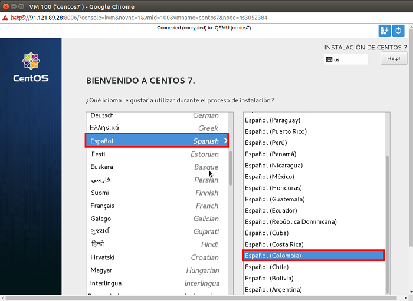
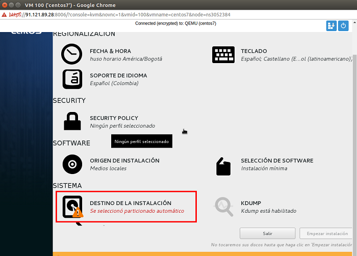
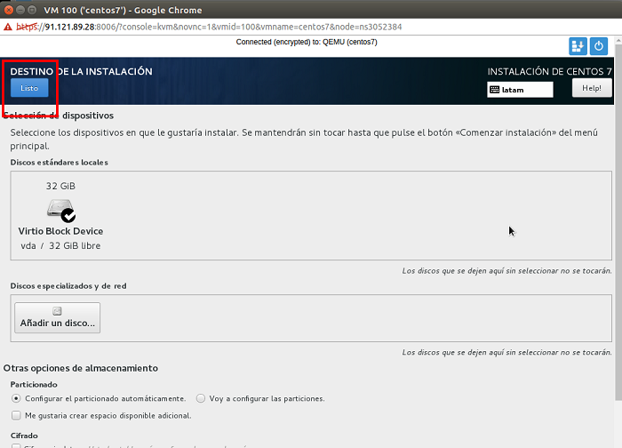
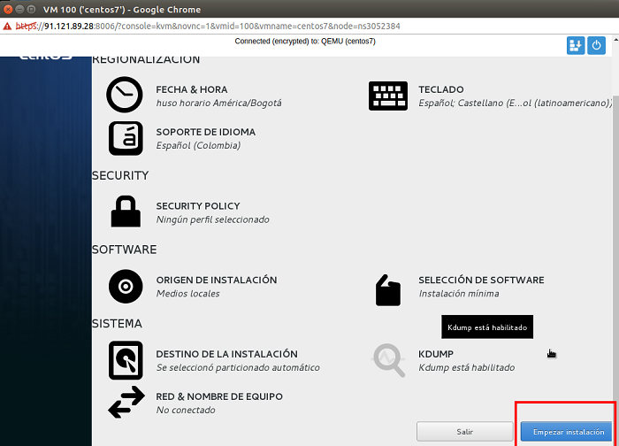
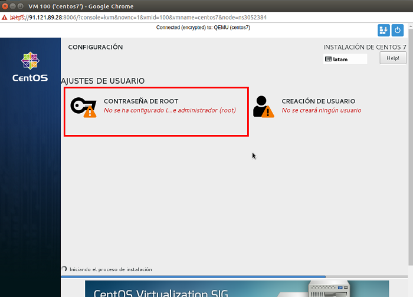
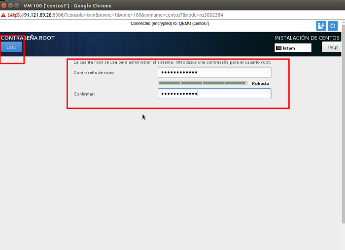
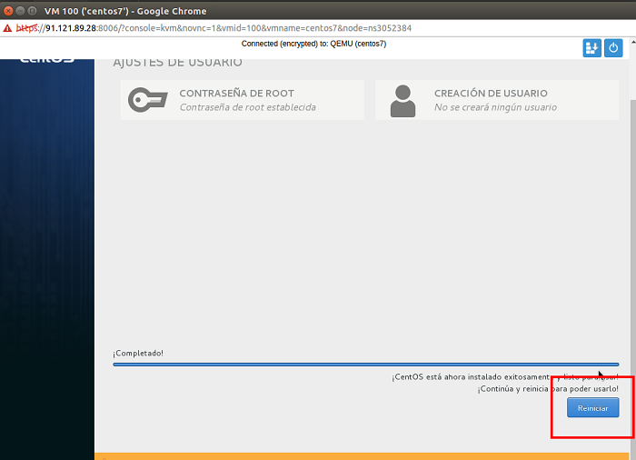

Para la instalación básica de Centos 7 Minimal se deben seguir los siguientes pasos:
1. Como primer paso se selecciona la máquina virtual a usar, se da click en el botón iniciar y por último se da clic en consola para que Console NoVNC se inicie y permita la instalación remota del sistema operativo.

2. Se abrirá la consola NoVNC y escogemos la opción Install Centos 7

3. Configuramos el Lenguaje y el País a usar en el proceso de instalación

4. Seleccionamos el disco destino de la instalación.

5. Por defecto el sistema de instalación detecta el disco duro y solo damos clic en listo

6. Damos clic en Empezar la Instalación.

7. Damos clic en Contraseña de ROOT para asignar una contraseña al súper usuario.

8. Asignamos la contraseña del usuario ROOT insertándola en los campos requeridos. Al final dar clic dos (2) veces al botón Listo.

9. Esperamos a que la instalación complete y como último paso damos clic en el botón Reiniciar.
